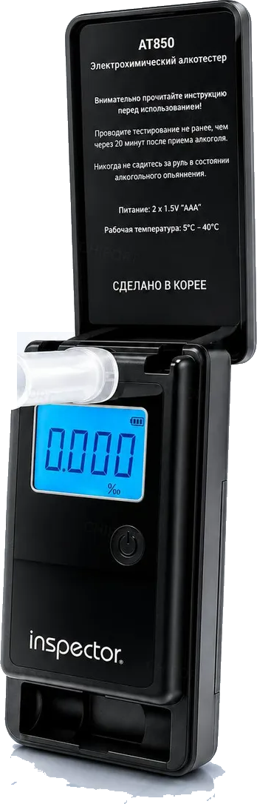

Алкотестер Inspector AT850 отвечает на главный вопрос утра — можно ли за руль. Дома, до выезда, а не на посту ДПС.

Ощущения врут: «вроде норм» и «0,3 ‰» выглядят одинаково. Прибор говорит цифрой.
Это главное отличие AT850 от тестеров за 900 ₽ — и причина, по которой ему верят.
Тестируйте не ранее чем через 20 минут после приёма алкоголя — иначе прибор измерит остатки во рту, а не в лёгких.
Одна поездка на такси стоит дороже сомнений. Один AT850 закрывает вопрос на годы вперёд.